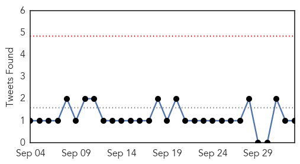
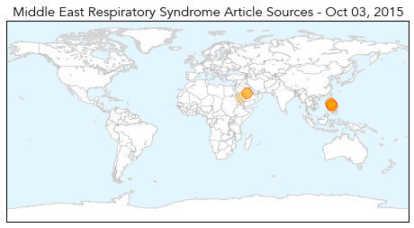
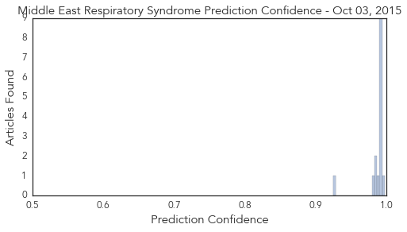
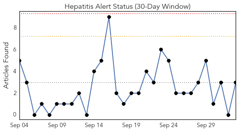
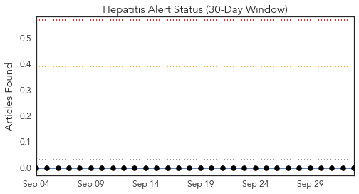
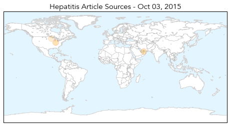
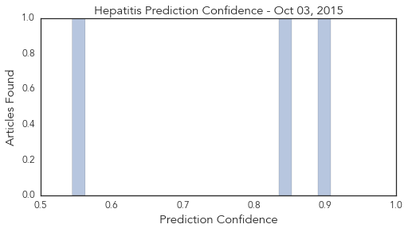

MERS
30-Day Web Trend
0 alerts, 0 warnings

30-Day Twitter Trend
0 alerts, 0 warnings

Article Locations
Article Confidences
Top Articles:
- 0.997
- MERS-CoV claims first death in PH
- 0.994
- Philippines: Saudi national dies of suspected MERS
- 0.994
- MERS eyed in Saudi’s death; DOH looking for his contacts
- 0.993
- Saudi national dies from MERS in Philippines
- 0.993
- Saudi national with suspected MERS dies in Philippines
- 0.993
- Saudi with suspected MERS dies in Philippines
- 0.993
- Saudi national dies from MERS in Philippines
- 0.992
- Saudi national with suspected MERS dies in Philippines
- 0.991
- Health office confirms death of Saudi national due to MERS-CoV
- 0.990
- Saudi national dies from MERS in Philippines
- 0.989
- 12 Filipinos in quarantine after Saudi dies of Mers
- 0.985
- Saudi man, 63, dies of MERS in Philippines
- 0.984
- Hong Kong agency advises tourist vigilance in MERS-affected Mideast nations
- 0.979
- DOH: Saudi national dies of suspected MERS-CoV
- 0.925
- Another Pinay nurse in Saudi tests positive for MERS-CoV
Top Tweets:
- 0.657
- AFD Blog `Philippines: Suspected MERS Case Dies – 12 HCWs In Quarantine' MERS-CoV http://t.co/xNlJuyo5oN
Hepatitis
30-Day Web Trend
0 alerts, 0 warnings

30-Day Twitter Trend
0 alerts, 0 warnings

Article Locations
Article Confidences
Top Articles:
Top Tweets:
-
No tweets found for Oct 03, 2015